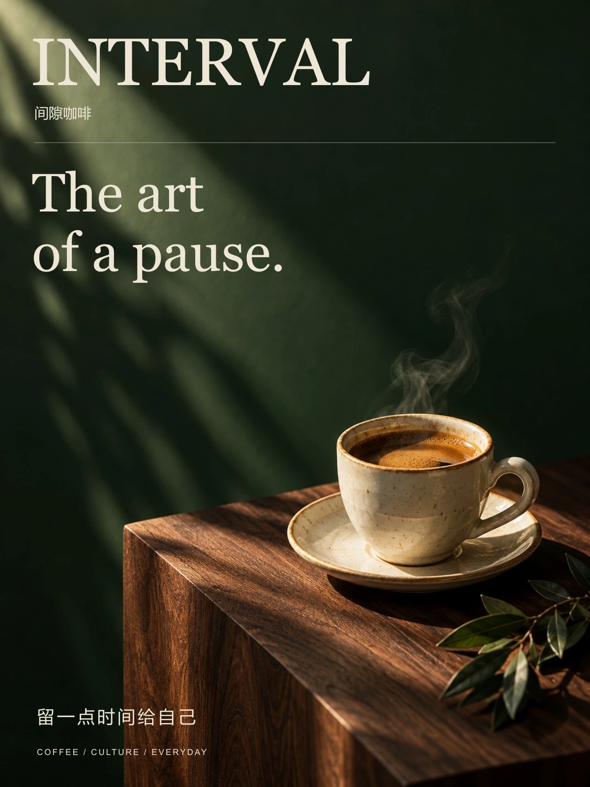
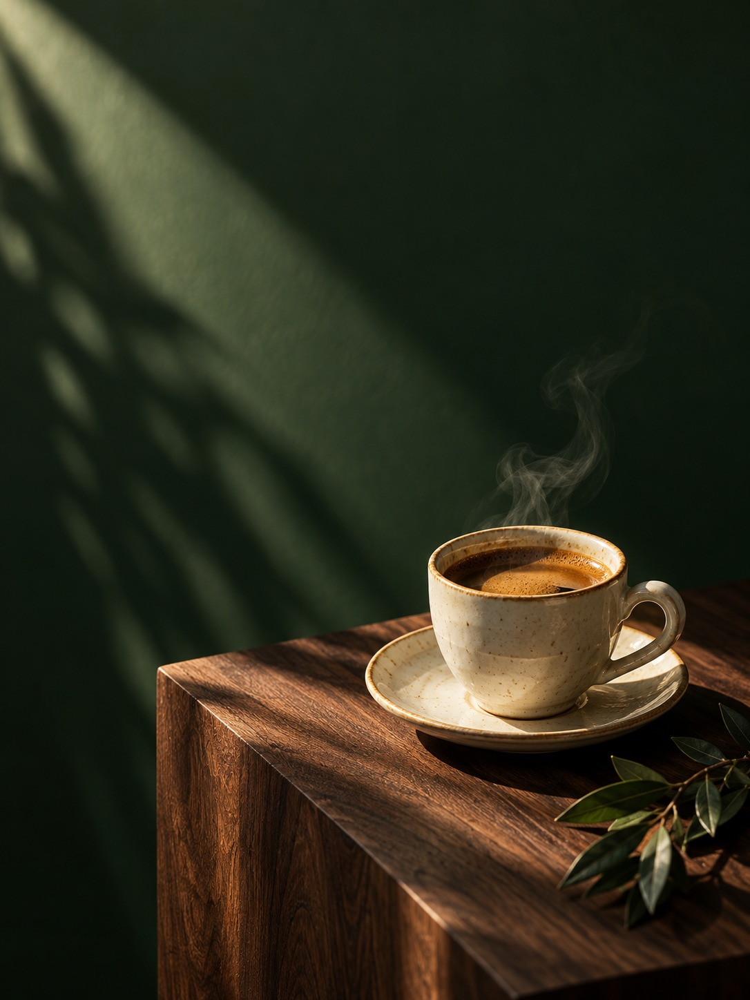

BARRAN CREATIVE DESIGNBRAND · EDITORIAL · VISUALSCROLL TO DISCOVER ↓
A SELECTION OF CONCEPT PROJECTS
精选作品Selected works
01 — 06


THE WAY WE SEE
关于 BARRAN视觉有温度，
表达有分寸。
Barran创意设计关注品牌与日常之间的关系。以字体、光线、材质和版式，建立清楚而有性格的视觉表达。
这里收录六组概念项目，涵盖餐饮、文化、自然教育、策略提案、生活方式与城市活动。每组从主视觉延展到横向和方形版式，呈现同一主题在不同场景中的表达。
品牌视觉编辑排版活动传播演示设计